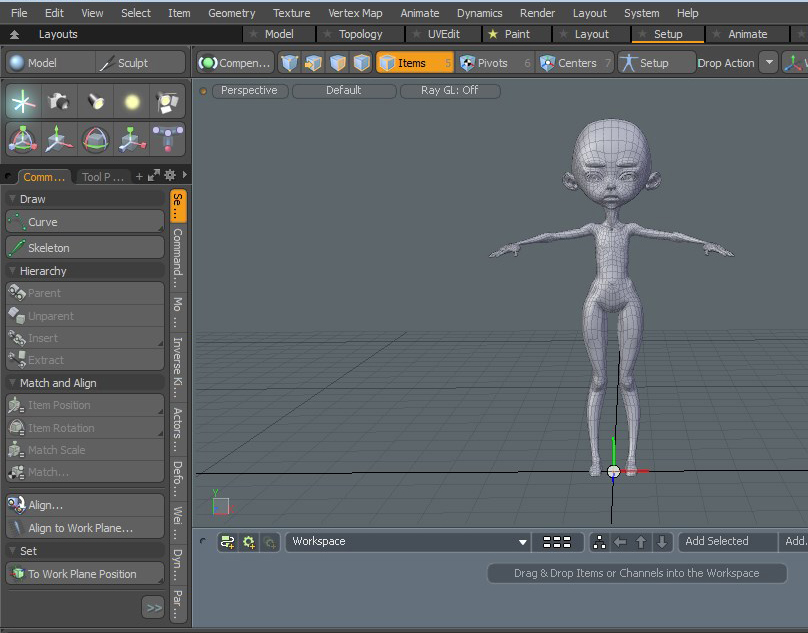
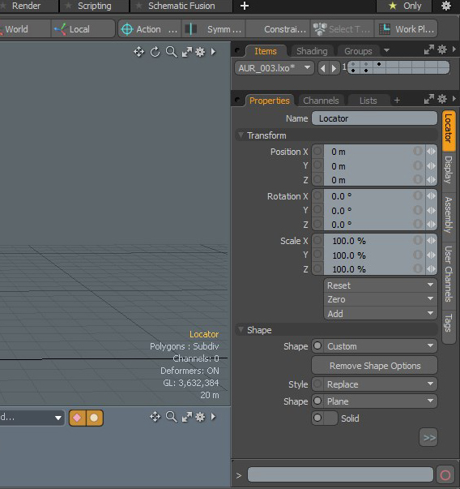
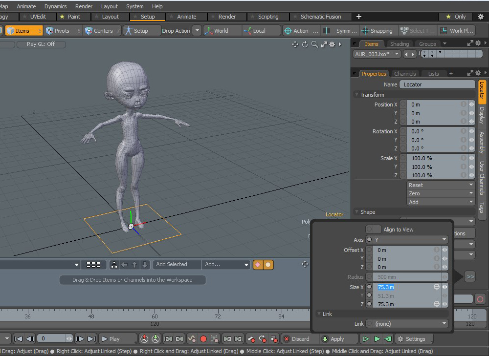
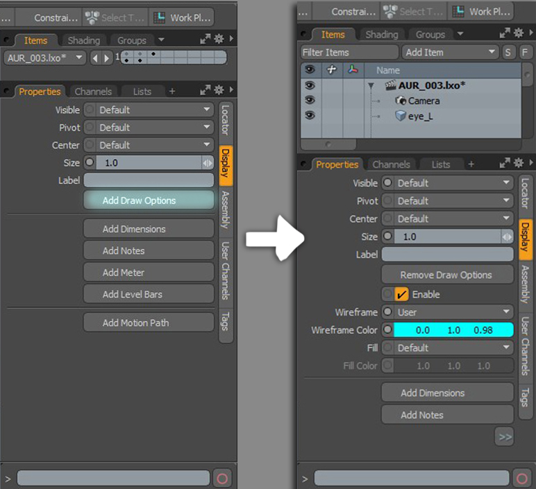
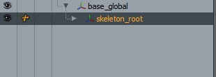

- Yonseo Rigging Kit for Modo
Creating controls for our character
Let's start by creating a locator.


In the properties panel change:
shape: custom
style: replace
shape: plane
solid: unselected
Axis: Y

You can change the size of the locator as shown below. Important: You want to change the size of the locator in this window with the
size or radius option.
Display Tab
click "Add draw options"
wireframe: user
in wireframe color you can change the color of your choice.

Rename the square control to 'base_global'. This is the parent to our skeleton.
We now have to parent the 'base_global' to our 'skeleton_root'. First select the 'skeleton_root' and lastly ctr+select the 'base_global'.
Press 'P' on the keyboard to parent.

You have now created your first control! Now you can use this process to create other types of controls like circles, pyramids, spheres, etc.
In the next lesson we will create a skeleton control and cover drop action to position our controls.
Lesson #7